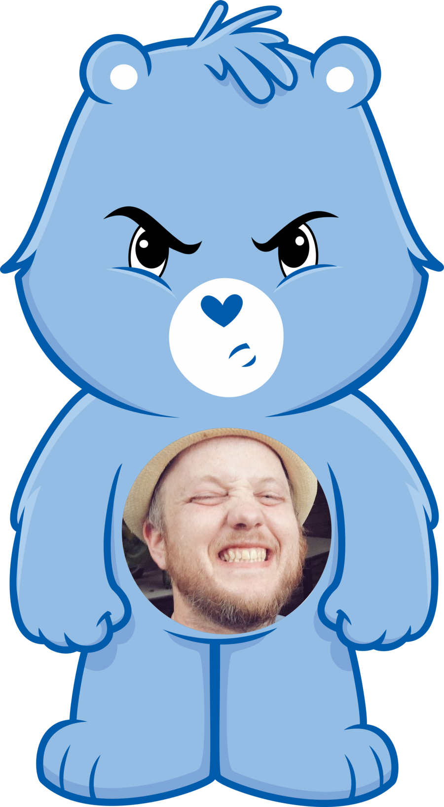

“I love deadlines.
I like the
whooshing
sound they make
as they fly by.”
This project is an exploration of fonts. In this series I explore how two complementary fonts can blend into a cohesive design that is stylistically appealing and also fun.
When tempted to fight fire with fire, remember that the Fire Department usually uses
"Well, I could do that... but I won't because  I'm not an animal and I don't hate myself." - Steve Kinney
in Everything moderation moderation including
“I love deadlines.
I like the
whooshing
sound they make
as they fly by.”
― Douglas Adams